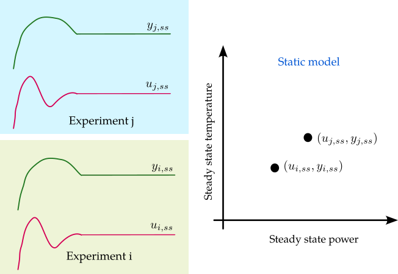

- get_static_model(system, step=5, usefile=False)
Sets up and conducts a sequence of experiments to obtain the static gain model for a temperature control system.
This function uses a closed-loop control approach to determine the static model. The setpoint begins at 40 degrees Celsius and increments by the value specified in the step parameter. For each setpoint, once the system output (temperature) reaches the steady-state value, the control signal required to maintain that state is recorded, generating a data point for the static model. This process covers the range from 40° to 60° Celsius.

- Parameters:
system (ThermalSystemIoT) – The thermal system under test.
step (float, optional) – The increment between setpoints. Defaults to 5.
usefile (bool, optional) – If True, reads data from a prerecorded file instead of conducting a new experiment. Defaults to False.
- Returns:
power_values (list of floats) – A list of the power input values required to achieve each steady-state temperature.
temperatures (list of floats) – A list containing the steady-state temperatures.
Notes
Data is stored in a CSV file located at /experiment_files/Thermal_static_gain_model.csv.
Example
First, ensure that you have already imported the unthermal package and defined the thermal system as follows:
>>> import unthermal as ter >>> my_system = ter.ThermalSystemIoT(plant_number="XXXX", broker_address="192.168.1.100")Then, obtain the static model of the thermal system as follows:
>>> power, temperature = ter.get_static_model(my_system, step=5)
{kind=link}